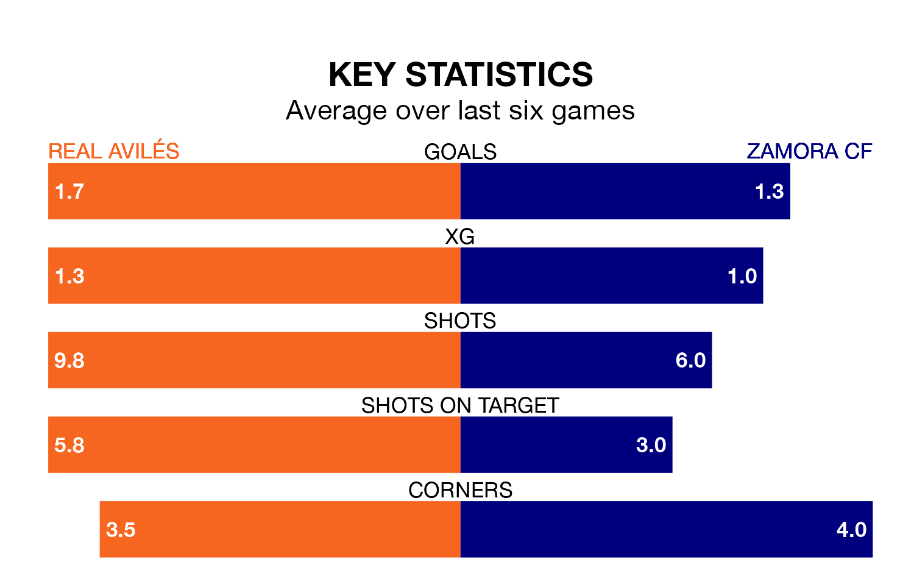

Real Avilés host Zamora CF on Sunday at the Estadio Román Suárez Puerta in the Segunda División RFEF Group 1.
In their last league match, on March 17, Avilés beat Real Oviedo B 2-0 at home, with their goal scored by Natalio Lorenzo Poquet.
Zamora drew, 1-1 at home against Villalbés, with Adrián Mancebo Serrano scoring their goals.
With 33 goals in 27 games so far this season, Avilés are scoring more than average in the league with 1.2 goals per game. And they are conceding fewer than average, letting in 26 goals at a rate of 1.0 per game.
Zamora, meanwhile, are average scorers, with 1.1 goals per game. They have conceded 0.6 goals per game.
The away side are third in the table after 27 games, of which they have won 14 and drawn nine, earning 51 points.
The hosts are three places behind Zamora in sixth, with eight wins and 13 draws putting them on 37 points.
In the last 10 years, Avilés and Zamora have played each other on six occasions. Avilés won three of them, Zamora two, and they drew once.
On average, Avilés scored 1.8 goals and Zamora 1.3 in those matches.
Their last meeting was on November 12, when Zamora won 1-0 at home.
Avilés are in reasonable form in the Segunda División RFEF Group 1, with three wins and two draws from their last six games.
With two wins and three draws over that period, Zamora's form is slightly worse – they have taken nine points from 18, compared to Avilés's 11.
Updated: 10:19 (UTC), 22/03/24